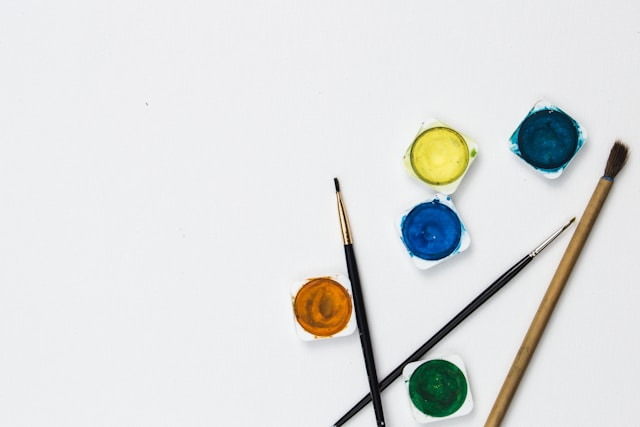

Υλικά Ζωγραφικής
Η επιλογή των υλικών καθόριζε πάντα το αποτέλεσμα και την τεχνική των μεγάλων ζωγράφων. Παρακάτω ακολουθεί μια σύγκριση των τριών βασικότερων μέσων ζωγραφικής, ώστε να κατανοήσετε πώς το κάθε υλικό επηρεάζει την υφή και την αντοχή ενός έργου τέχνης:

Ανάλυση υλικών ζωγραφικής
| Είδος Χρώματος | Χρόνος Στεγνώματος | Διαλυτικό / Βάση | Βασικό Χαρακτηριστικό |
|---|---|---|---|
| Λαδομπογιά (Oil) | Πολύ Αργός (Μέρες ή Εβδομάδες) | Λινέλαιο & Νέφτι | Εξαιρετική ανάμειξη χρωμάτων και τεράστια αντοχή στο χρόνο. |
| Ακρυλικό (Acrylic) | Πολύ Γρήγορος (Λεπτά) | Νερό | Στεγνώνει γρήγορα και γίνεται εντελώς αδιάβροχο μετά το στέγνωμα. |
| Υδατογραφία (Watercolor) | Γρήγορος | Νερό | Διαφάνεια (transparency) και μοναδική αίσθηση φωτεινότητας. |